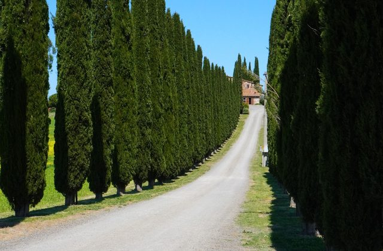
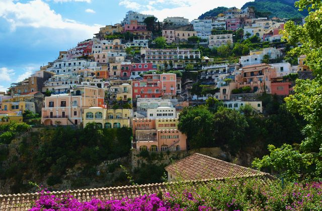
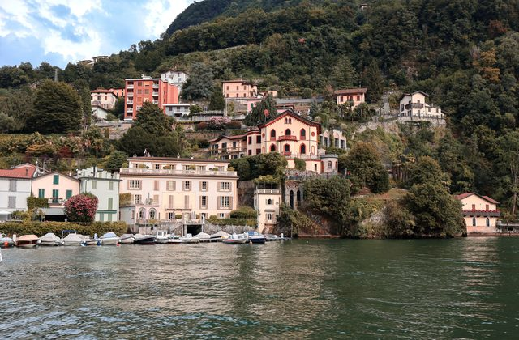
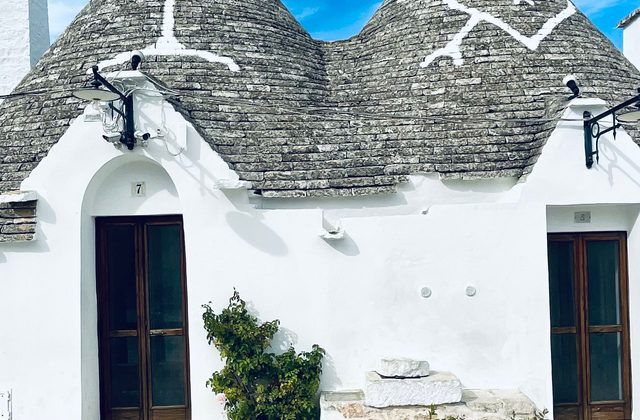

Where to start
Each guide covers one region: what the area is actually like, where it makes sense to base yourself, how to get there from the nearest airport, and what to do once you are settled in.

Tuscany
Hill towns, cypress roads and why a rental car changes the trip.

Amalfi Coast
Positano, Amalfi and Ravello — and the coast road you want to avoid.

Lake Como
Varenna, Bellagio, Menaggio, and getting around by ferry.

Puglia
Trulli towns, white hill villages and the quietest coast in Italy.
Before you book anything
Work out the airport first, not the hotel
In most Italian regions the nearest airport decides how the whole trip feels. Flying into Naples instead of Rome saves three hours on the way to the Amalfi Coast. Landing at Pisa instead of Florence can be cheaper and is no further from most of Tuscany. Check the route before you lock in dates, because moving a trip by a day or two often shifts the airfare more than the room does.
Decide early whether you need a car
This is the single question that changes an Italian itinerary most. Lake Como and the Amalfi Coast are easier without one — parking is scarce, expensive, and the boats are better anyway. Tuscany and inland Puglia are the opposite: the places worth seeing sit between the towns, and public transport does not go there.
Sort the small things before you fly
A data plan, travel cover and a booked airport transfer take about fifteen minutes together, and they are the three things people scramble for on arrival.
The practical shortlist
- Data: an eSIM for Italy installs from a QR code before you leave and keeps your own number for calls. Plans run from roughly 1 GB for a short trip up to 20 GB for a longer one.
- Cover: travel insurance for Italy for medical care, emergency transport, lost baggage and long flight delays — from around a euro a day at the basic tier.
- Flights: compare fares across airlines in one search to see whether Rome, Milan or Naples is the cheaper way in.
- If a flight is delayed or cancelled: under EU rules you may be owed compensation of up to €600, and you can usually claim years after the fact. Check an old flight here.
About this site
Cozy Stays & B&Bs collects guides to small, characterful places to stay in Italy, written for people who would rather spend four nights in one village than tick off five cities in a week. The same guides go out on Pinterest and Flipboard, where new ones appear two or three times a week.
Some links on this site are affiliate links. If you book through one, we may earn a commission at no extra cost to you. It never changes what we recommend or what you pay.